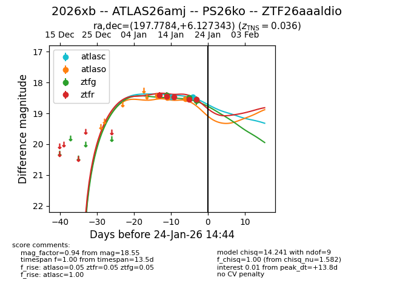
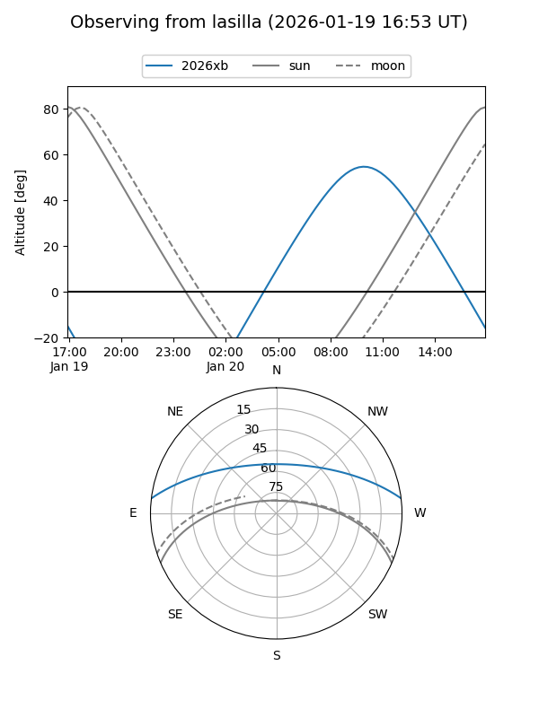
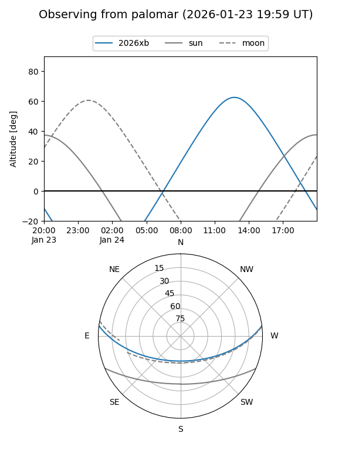
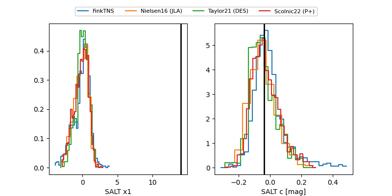

2026xb
Target 2026xb at 2026-01-25 02:16
Aliases and brokers:
FINK: link
Lasair: link
ALeRCE: link
TNS: link
YSE: link
alt names
ZTF26aaaldio (ztf,fink_ztf)
2026xb (tns,yse)
ATLAS26amj (atlas)
PS26ko (panstarrs)
Coordinates:
equatorial (ra, dec) = 197.7784,+6.12734
equatorial (HMS+DMS) = 13:11:06.83,+06:07:38.44
galactic (l, b) = (316.3738,+68.48407)
Flags:
Photometry:
last atlasc=18.47, atlaso=18.54, ztfg=18.58, ztfr=18.55
2 atlasc, 3 atlaso, 3 ztfg, 5 ztfr detections
Lightcurve

Visibility


Additional plots
